정보처리기사(구) (2003-05-25 기출문제)
1과목: 데이터 베이스
1. 관계 데이터베이스에서 릴레이션을 구성하고 있는 각각의 속성(attribute)에서 취할 수 있는 값들의 집합을 무엇이라 하는가?
- 튜플(tuple)
- 도메인(domain)
- 개체 타입(entity type)
- 개체 어커런스(entity occurrence)
(정답률: 63%)

2. VSAM 파일에 대한 설명으로 거리가 먼 것은?
- 기본 데이터 영역과 오버플로 영역을 구분하지 않는다.
- 레코드를 삭제하면 그 공간을 재사용 할 수 있다.
- 제어 구간에 가변 길이 레코드를 쉽게 수용할 수 있다.
- 특정 레코드에 대해 빠르고 직접적인 접근을 지원할 수 있기 때문에 대화형 처리에 많이 이용된다.
(정답률: 47%)
3. 시스템 카탈로그에 대한 설명으로 옳지 않은 것은?
- 시스템 자신이 필요로 하는 여러 가지 개체에 대한 정보를 포함한 시스템 데이터베이스이다.
- 개체들로서는 기본 테이블, 뷰, 인덱스, 데이터베이스, 패키지, 접근 권한 등이 있다.
- 카탈로그 자체도 시스템 테이블로 구성되어 있어 일반 이용자도 SQL을 이용하여 내용을 검색해 볼 수 있다.
- 모든 데이터베이스 시스템에서 요구하는 정보는 동일하므로 데이터베이스 시스템의 종류에 관계없이 동일한 구조로 필요한 정보를 제공한다.
(정답률: 74%)
4. 개체-관계(E-R) 다이어그램에서 개체를 표시하는 것은?
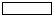
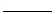
(정답률: 72%)
5. B-트리가 가지는 성질이 아닌 것은?
- 한 노드 안에 있는 키값은 오름차순을 유지한다.
- 모든 리프(leaf) 노드는 같은 레벨에 있다.
- 루트(root) 노드는 리프가 아닌 이상 적어도 두개의 서브트리를 갖는다.
- 키 값의 삽입이나 삭제시 트리의 총 노드 수는 변함이 없다.
(정답률: 60%)
6. 다음과 같이 어떤 릴레이션 R과 그 릴레이션에 존재하는 종속성이 주어졌을 때 릴레이션 R은 몇 정규형인가?
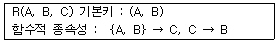
- 제 1 정규형
- 제 2 정규형
- 제 3 정규형
- 보이스/코드 정규형
(정답률: 44%)
7. 다음 표와 같은 판매실적 테이블을 읽어 서울지역에 한하여 판매액 내림차순으로 지점명과 판매액을 출력하고자 한다. 가장 적절한 SQL구문은?
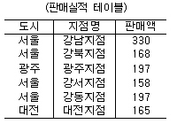
- SELECT 지점명, 판매액 FROM 판매실적 WHERE 도시='서울' ORDER BY 판매액 DESC ;
- SELECT 지점명, 판매액 FROM 판매실적 ORDER BY 판매액 DESC ;
- SELECT 지점명, 판매액 FROM 판매실적 WHERE 도시='서울' ASC ;
- SELECT * FROM 판매실적 WHEN 도시='서울' ORDER BY 판매액 DESC ;
(정답률: 77%)
8. 다음 릴레이션 R1과 R2에 대해 아래의 SQL 문을 실행한 결과는?
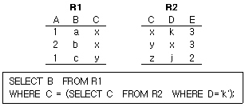
- a
- b
- a b c
- a b
(정답률: 56%)
9. 다음 Tree의 Degree와 터미널 노드의 수는?
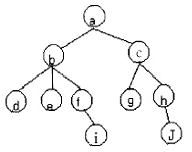
- Degree: 2, 터미널 노드 : 4
- Degree: 3,터미널 노드 : 5
- Degree: 4, 터미널 노드 : 2
- Degree: 4,터미널 노드 : 10
(정답률: 85%)
10. 관계 데이터 언어(Data Language) 중에서 데이터의 보안, 무결성, 회복과 밀접한 관련이 있는 것은?
- 데이터 정의어(Data Definition Language)
- 데이터 조작어(Data Manipulation Language)
- 데이터 제어어(Data Control Language)
- 도메인 관계해석 질의어(Query By Example)
(정답률: 72%)
11. 관계형 데이터베이스의 뷰(view)에 대한 설명으로 틀린 것은?
- 가상 테이블이다.
- 기본 테이블의 열들로 구성된다.
- 실제 데이터가 저장된다.
- 융통성있는 검색연산에 사용 가능하다.
(정답률: 75%)
12. 데이터베이스 관리 시스템의 기능과 그에 대한 설명이 옳게 연결된 것은?
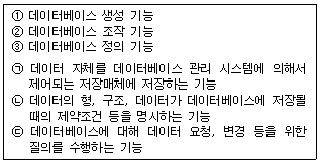
- ①-(ㄱ), ②-(ㄴ), ③-(ㄷ)
- ①-(ㄱ), ②-(ㄷ), ③-(ㄴ)
- ①-(ㄷ), ②-(ㄱ), ③-(ㄴ)
- ①-(ㄴ), ②-(ㄱ), ③-(ㄷ)
(정답률: 69%)
13. 분산 데이터베이스의 불법적인 접근을 차단하기 위하여 데이터 암호화가 필요하다. DES 알고리즘에서는 평문을 ( ① ) 비트로 블록화를 하고 실제 키의 길이는 ( ② )비트를 이용한다. 괄호의 내용으로 옳은 것은?
- ① 64 ② 56
- ① 64 ② 32
- ① 32 ② 16
- ① 32 ② 8
(정답률: 47%)
14. 다음과 같이 주어진 후위표기방식의 수식을 중위표기방식으로 나타낸 것은?
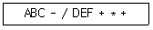
- A / (B - C) + F * E + D
- A / (B - C) + D * ( E + F )
- A / (B - C) + D + E * F
- A / (B - C) * D + E + F
(정답률: 75%)
15. 다음은 무엇에 대한 설명인가?
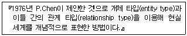
- 계층 데이터 모델
- 네트워크 데이터 모델
- 개체-관계 모델
- 관계 데이터 모델
(정답률: 79%)
16. 데이터베이스의 설계 단계 순서가 옳은 것은?
- 요구분석-물리설계-개념설계-논리설계-DATABASE
- 요구분석-개념설계-물리설계-논리설계-DATABASE
- 요구분석-논리설계-개념설계-물리설계-DATABASE
- 요구분석-개념설계-논리설계-물리설계-DATABASE
(정답률: 82%)
17. 트랜잭션(transaction)의 특성으로 옳지 않은 것은?
- 트랜잭션이 일단 그 실행을 성공적으로 완료하면 그 결과는 영속적이다.
- 트랜잭션이 실행 중에 있는 연산의 중간결과에 다른 트랜잭션이 접근할 수 없다.
- 트랜잭션이 그 실행을 성공적으로 완료하면 언제나 일관성 있는 데이터베이스 상태로 변환한다.
- 트랜잭션은 자기의 연산을 부분 실행하여 트랜잭션의 기능을 행한다.
(정답률: 53%)
18. 다음의 빈칸에 적합한 단어는?
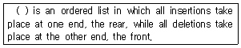
- A stack
- A queue
- A graph
- A liner list
(정답률: 66%)
19. 트랜잭션의 병행제어 목적이 아닌 것은?
- 데이터베이스의 공유 최대화
- 시스템의 활용도 최대화
- 데이터베이스의 일관성 최소화
- 사용자에 대한 응답시간 최소화
(정답률: 79%)
20. 다음은 무엇에 대한 설명인가?
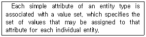
- Domains
- Schemas
- Attributes
- Tuples
(정답률: 57%)
2과목: 전자 계산기 구조
21. 10진수 956에 대한 BCD 코드는?
- 1101 0101 0110
- 1000 0101 0110
- 1001 0101 0110
- 1010 0101 0110
(정답률: 70%)
22. stack이 갖는 주소지정 방식은?
- 0-Address
- 1-Address
- 2-Address
- 3-Address
(정답률: 70%)
23. 다음과 같은 마이크로 오퍼레이션이 일어나는 상태는?
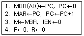
- Fetch
- Indirect
- Interrupt
- Execute
(정답률: 55%)
24. JK 플립플롭에서 Jn=1, Kn=0일 때 Qn+1의 출력 상태는?
- 반전
- 불변
- 세트
- 리셋
(정답률: 40%)
25. 다음 인터럽트 중 최우선권이 주어져야 하는 경우는?
- 정전
- 자료전달의 오류
- 명령의 오동작
- 입출력장치의 오동작
(정답률: 73%)
26. 캐시(cache) 기억장치 설명 중 옳은 것은?
- 중앙처리장치와 주기억장치 사이의 정보교환을 위해 임시 보관하는 것
- 중앙처리장치의 속도와 주기억장치의 속도를 가능한 같도록 하기 위한 것
- 캐시와 주기억장치 사이에 정보 교환을 위하여 임시 저장하는 것
- 캐시와 주기억장치의 속도를 같도록 하기 위한 것
(정답률: 56%)
27. 간접 주소(indirect addressing) 방식을 설명한 것은?
- 명령문 내의 번지는 실제 데이터의 주소를 표시한다.
- 명령문 내의 번지는 절대 주소이므로 더 이상의 연산이 필요하지 않다.
- 명령문 내의 번지는 상대 주소이므로 기본 번지를 더하여 절대 주소가 생성된다.
- 명령문 내의 번지는 실제 데이터의 위치를 찾을 수 있는 번지가 들어 있는 장소를 표시한다.
(정답률: 66%)
28. 인쇄 장치 중에서 인쇄되는 문자가 보통 활자체로 되지 않고 점에 의해 나타나는 인쇄기는?
- print wheel printer
- dot matrix printer
- chain printer
- bar printer
(정답률: 84%)
29. 명령어의 연산자 코드가 8비트, 오퍼랜드(operand)가 10비트 일 때 이 명령어로 몇 가지 연산을 수행하게 할 수 있는가?
- 8
- 18
- 256
- 1024
(정답률: 57%)
30. 기억장치를 각 모듈이 번갈아 가며 접근하는 방법은?
- 페이징
- 스테이징
- 인터리빙
- 세그멘팅
(정답률: 62%)
31. B 레지스터의 내용을 P 제어 신호에 따라 A 레지스터에 기억하기 위한 회로는?
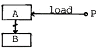
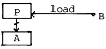
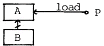
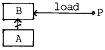
(정답률: 40%)
32. 타이머(Timer)에 의한 인터럽트(Interrupt)는?
- 프로그램 인터럽트
- I/O 인터럽트
- 익스터널 인터럽트
- 머신 체크 인터럽트
(정답률: 38%)
33. 어느 컴퓨터의 기억 용량이 1M byte이다. 이 때 필요한 주소선의 수는?
- 8개
- 16개
- 20개
- 24개
(정답률: 46%)
34. 자료를 입출력 할 때 가장 효과적인 방법은?
- Programmed 입출력
- Interrupt 입출력
- Direct memory Access
- Handshaking
(정답률: 56%)
35. 다음번의 명령어가 현재의 프로그램 카운터(PC)를 기준으로 하여 어느 번지에 있음을 나타내는 주소지정 방식은?
- 상대번지 지정방식
- 간접번지 지정방식
- 직접번지 지정방식
- 절대번지 지정방식
(정답률: 50%)
36. 컴퓨터에서 사용하는 명령어를 기능별로 분류할 때 동일한 분류에 포함되지 않는 것은?
- JMP(Jump 명령)
- ADD(Addition 명령)
- ROL(Rotate Left 명령)
- CLC(Clear Carry 명령)
(정답률: 43%)
37. 2진수 0011의 2의 보수(2'S complement)는?
- 1100
- 1110
- 1101
- 1111
(정답률: 69%)
38. 인터럽트를 발생하는 모든장치들을 인터럽트의 우선순위에 따라 직렬로 연결함으로써 이루어지는 우선순위 인터럽트 처리방법은?
- handshaking
- daisy-chain
- DMA
- polling
(정답률: 58%)
39. 인터럽트 요청 판별방법에 관한 내용 중 옳지 않은 것은?
- S/W에 의한 판별 방법은 폴링에 의한 방법이라고도 한다.
- H/W에 의한 판별 방법은 장치번호 버스를 이용한다.
- S/W에 의한 판별 방법은 인터럽트 처리 루틴이 수행된다.
- H/W에 의한 판별 방법은 S/W에 의한 판별 방법보다 속도가 느리다.
(정답률: 67%)
40. 인터럽트 벡터에 필수적인 것은?
- 분기번지
- 메모리
- 제어규칙
- Acc
(정답률: 49%)
3과목: 운영체제
41. 현재 헤드의 위치가 50에 있고, 요청 대기 열에는 다음과 같은 순서로 들어 있다고 가정할 때, C-SCAN(Circular-scan) 스케줄링 알고리즘에 의한 헤드의 총 이동거리는 얼마인가?
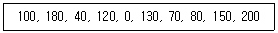
- 790
- 380
- 370
- 250
(정답률: 56%)
42. 유닉스 시스템에서 프로세스 관리, 입/출력 관리, 기억장치 관리 등의 기능을 수행하는 것은?
- kernel
- fork
- utility
- shell
(정답률: 70%)
43. 페이징 기법과 관련된 설명으로 옳지 않은 것은?
- 어떤 프로세스가 프로그램 실행에 사용하는 시간보다 페이지 적재 및 대치에 소비하는 시간이 더 큰 경우에 스래싱이 발생한다.
- 페이지 크기가 작을 경우 페이지 테이블의 공간이 많이 요구된다.
- 작업세트(working set) 방식은 스래싱을 방지하는 방법 중의 하나이다.
- 다중프로그래밍의 정도가 높을수록 스래싱의 발생 빈도는 낮아진다.
(정답률: 56%)
44. UNIX에서 각 파일에 대한 정보를 기억하고 있는 자료구조로서 파일 소유자의 식별번호, 파일 크기, 파일의 최종 수정시간, 파일링 크수 등의 내용을 가지고 있는 것은?
- 슈퍼 블록(super block
- inode(index node)
- 디렉토리(directory)
- 파일 시스템 마운팅(mounting)
(정답률: 72%)
45. 직접 파일(direct file)에 대한 설명으로 거리가 먼 것은?
- 직접 접근 기억장치의 물리적 주소를 통해 직접 레코드에 접근한다.
- 키에 일정한 함수를 적용하여 상대 레코드 주소를 얻고, 그 주소를 레코드에 저장하는 파일 구조이다.
- 직접 접근 기억장치의 물리적 구조에 대한 지식이 필요하다.
- 직접 파일에 적합한 장치로는 자기테이프를 주로 사용한다.
(정답률: 59%)
46. HRN(Highest Response-ratio Next) 방식으로 스케줄링할 경우, 입력된 작업이 다음과 같을 때 우선순위가 가장 높은 작업은?
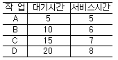
- A
- B
- C
- D
(정답률: 63%)
47. 프로그램 검사 인터럽트가 발생되는 이유로 적합하지 않은 것은?
- 잘못 사용된 명령어(invalid CPU instruction)가 나타날 때
- 부당한 기억장소 참조와 같은 프로그램 상의 오류가 발생할 때
- 계산 결과로서 소수점 넘침 현상(fixed-point arithmetic overflow)이 나타날 때
- 주어진 CPU 사용 시간을 해당 프로세스가 모두 소진 할 경우(interval time going out)
(정답률: 54%)
48. 운영체제의 발달과정 순서를 옳게 나열한 것은?
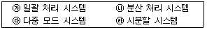
- ㉮→㉱→㉰→㉯
- ㉰→㉯→㉱→㉮
- ㉮→㉰→㉱→㉯
- ㉰→㉱→㉯→㉮
(정답률: 56%)
49. 운영체제에 대한 설명으로 옳지 않은 것은?
- 다중 사용자와 다중 응용프로그램 환경 하에서 자원의 현재 상태를 파악하고 자원 분배를 위한 스케줄링을 담당한다.
- CPU, 메모리 공간, 기억 장치, 입/출력 장치 등의 자원을 관리한다.
- 운영체제의 종류로는 매크로 프로세서, 어셈블러, 컴파일러 등이 있다.
- 입/출력 장치와 사용자 프로그램을 제어한다.
(정답률: 69%)
50. 중앙처리장치와 입/출력장치가 동시에 주기억장치를 접근하려고 하는 경우, 입/출력장치에 우선순위를 부여하여 주기억장치를 액세스하는 동안, 중앙처리장치에서 주기억장치에 대한 접근 작업을 양보하도록 하는 기법은?
- 폴링(polling)
- 직접 메모리 액세스(direct memory access)
- 기억 장치 인터리빙(storage interleaving)
- 사이클 스틸링(cycle stealing)
(정답률: 43%)
51. 파일 보호 기법 중 각 파일에 접근 목록을 두어 접근 가능한 사용자와 가능한 동작을 기록한 후, 이를 근거로 접근을 허용하는 기법은?
- 파일의 명명(Naming)
- 비밀번호(Password)
- 접근제어(Access control)
- 암호화(Cryptography)
(정답률: 76%)
52. 파일 디스크립터의 내용으로 옳지 않은 것은?
- 오류 발생시 처리 방법
- 보조기억장치의 유형
- 파일의 구조
- 접근 제어 정보
(정답률: 58%)
53. 분산 시스템의 설계 목적으로 적합하지 않은 것은?
- 신뢰성
- 자원 공유
- 연산 속도 향상
- 보안성 향상
(정답률: 76%)
54. 다중 프로그래밍 시스템에서 운영체제에 의해 중앙처리장치가 할당되는 프로세스를 변경하기 위하여 현재 중앙처리장치를 사용하여 실행되고 있는 프로세스의 상태 정보를 저장하고, 앞으로 실행될 프로세스의 상태 정보를 설정한 다음에 중앙처리장치를 할당하여 실행이 되도록 하는 작업을 의미하는 것은?
- Context switching
- Interrupt
- Semaphore
- Dispatching
(정답률: 53%)
55. 버퍼링(buffering)에 대한 설명 중 틀린 것은?
- 디스크 전체를 매우 큰 버퍼처럼 사용한다.
- 한 레코드를 읽어서 CPU가 그것에 대한 작업을 시작함과 동시에 입/출력 장치가 필요한 레코드를 미리 읽어 CPU에 저장해 둔다.
- CPU가 필요한 레코드를 읽기 위해 기다리는 일이 없도록 한다.
- 저속의 입출력 장치와 고속의 CPU 간의 속도 차이를 해소하기 위해서 사용된다.
(정답률: 43%)
56. UNIX 운영체제의 특징으로 볼 수 없는 것은?
- 대화식 운영체제이다.
- 다중 사용자 시스템(Multi-user system)이다.
- 대부분의 코드가 어셈블리 언어로 기술되어 있다.
- 높은 이식성과 확장성이 있다.
(정답률: 73%)
57. 탐색 거리(seek distance)가 가장 짧은 요청이 먼저 서비스를 받는 디스크 스케줄링 기법으로 처리량이 주안점인 일괄처리에는 유용하나 응답시간의 편차가 크기 때문에 대화형 시스템에서는 부적합한 것은?
- FIFO
- SSTF
- SCAN
- C-SCAN
(정답률: 62%)
58. 분산 운영체제의 구조 중 완전 연결(Fully Connection)에 대한 설명으로 옳지 않은 것은?
- 모든 사이트는 시스템 안의 다른 모든 사이트와 직접 연결된다.
- 사이트들 간의 메시지 전달이 매우 빠르다.
- 기본비용이 적게 든다.
- 사이트 간의 연결은 여러 회선이 존재하므로 신뢰성이 높다.
(정답률: 75%)
59. 모니터에 대한 설명으로 틀린 것은?(오류 신고가 접수된 문제입니다. 반드시 정답과 해설을 확인하시기 바랍니다.)
- 모니터 내의 자원을 원하는 프로세스는 반드시 해당 모니터의 진입부를 호출함으로서 공유 자료에 접근할 수 있다.
- 구조적인 면에서 모니터는 데이터와 이 데이터를 처리하는 프로시저의 집합이라고 할 수 있다.
- 모니터 외부의 프로세스도 모니터 내부 데이터를 액세스 할 수 있다.
- 한순간에 하나의 프로세스만 모니터 안에서 활동하도록 한다.
(정답률: 53%)
60. 프로세스 스케줄링 기법 중 Round-Robin 기법에 대한 설명으로 옳지 않은 것은?
- 비 선점형 기법이다.
- 시간할당량이 너무 커지면, FCFS와 비슷하게 된다.
- 시간 할당량이 너무 작아지면, 오버헤드가 커지게 된다.
- interactive 시스템에 많이 사용된다.
(정답률: 50%)
4과목: 소프트웨어 공학
61. 비용예측방법에서 원시 프로그램의 규모에 의한 방법(COCOMO model)중 최대형 규모의 트랜잭션 처리시스템이나 운영체제 등의 소프트웨어를 개발하는 유형은?
- Organic 프로젝트
- Semidetached 프로젝트
- Embeded 프로젝트
- Sequential 프로젝트
(정답률: 59%)
62. 다음 설명에 해당되는 것은?
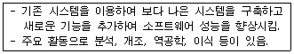
- 소프트웨어 재공학 (Software Re-engineering)
- 소프트웨어 공학 (Software engineering)
- 소프트웨어 프로그래밍 (Software Programming)
- 소프트웨어 개발 (Software Development)
(정답률: 81%)
63. 소프트웨어 유지보수에 관련된 설명으로 옳지 않은 것은?
- 유지보수는 소프트웨어가 인수, 설치된 후 발생하는 모든 공학적 작업을 말한다.
- 유지보수는 원인에 따라 수리(corrective)보수, 적응(adaptive)보수, 완전화(perfective)보수, 예방(preventive)보수 등이 있다.
- 소프트웨어에 가해지는 변경을 제어 관리하는 것을 형상관리(configuration management)라고 한다.
- 소프트웨어 비용 중 유지보수 비용은 개발비용 보다 적다.
(정답률: 80%)
64. 데이터 설계에 있어서 응집력의 의미로 가장 적절한 것은?
- 데이터 구조들이 시스템 전반에 얼마나 연관관계를 가지고 있는가 하는 정도
- 모듈이 개발 단계별로 얼마나 잘 정의되어 있는가 하는 정도
- 모듈이 독립적인 기능으로 잘 정의되어 있는 정도
- 모듈들 간의 상호 연관성의 정도
(정답률: 39%)
65. 시스템 구성요소에 해당되지 않는 것은?
- 입력
- 출력
- 제어
- 상태
(정답률: 72%)
66. 모듈의 구성 요소가 하나의 활동으로부터 나온 출력 자료를 그 다음 활동의 입력 자료로 사용하는 같은 모듈 내에서의 응집의 정도를 나타내는 것은?
- 절차적(procedural) 응집
- 논리적(logical) 응집도
- 기능적(functional) 응집도
- 순차적(sequential) 응집도
(정답률: 43%)
67. CASE 에 관한 설명으로 옳지 않은 것은?
- 소프트웨어 개발비용을 절약할 수 있다.
- 자동화된 검사를 통해 소프트웨어 품질을 향상시킨다.
- 모듈의 수가 증가하므로 개발 기간이 늘어난다.
- 프로그램의 유지 보수를 간편하게 한다.
(정답률: 73%)
68. 소프트웨어 프로젝트 계획 수립시 소프트웨어 영역 결정 사항에 기술되어야 할 주요 사항이 아닌 것은?
- 위험성(risk)
- 기능(function)
- 성능(performance)
- 신뢰도(reliability)
(정답률: 57%)
69. 브룩스(Brooks) 법칙의 의미로 가장 적절한 것은?
- 프로젝트 개발에는 많은 개발자가 필요하지 않다.
- 새로운 개발 인력이 진행 중인 프로젝트에 투입될 경우 작업 적응 기간과 부작용으로 인해 빠른 시간 내에 프로젝트는 완료될 수 없다.
- 프로젝트에는 많은 비용이 투입되어야 한다.
- 프로젝트에 개발자가 많이 참여할수록 프로젝트의 준공 기간은 지연된다.
(정답률: 67%)
70. 다음 중 결합도(Coupling)가 가장 낮은 것은?
- 공유결합(common coupling)
- 제어결합(control coupling)
- 외부결합(external coupling)
- 스템프결합(stamp coupling)
(정답률: 53%)
71. 블랙박스 검사에 해당하지 않는 것은?
- 데이터 흐름 검사(data flow testing)
- 동치 분할 검사(equivalence partitioning testing)
- 원인 효과 그래픽 기법(cause effect graphic -technique)
- 비교 검사(comparison testing)
(정답률: 61%)
72. 폭포수 모형에 대한 설명으로 옳지 않은 것은?
- 산출물이 명확하여 개발 공정의 기준점을 잘 제시한다.
- 모델의 적용 경험과 성공사례가 많다.
- 단계적 정의가 분명하고 전체 공조의 이해가 용이하다.
- 각 단계의 병렬 수행이 가능하다.
(정답률: 66%)
73. 하향식 통합에 있어서 모듈간의 통합시험을 하기 위해 일시적으로 필요한 조건만을 가지고 임시로 제공되는 시험용 모듈을 무엇이라고 하는가?
- Driver
- Stub
- Sub-Program
- Dummy-Program
(정답률: 42%)
74. Boehm 이 제안한 나선형 모델의 태스크(task)에 해당되지 않는 것은?
- 계획 수립(Planning)
- 위험 분석(Risk Analysis)
- 객체 구현(Object Implementation)
- 고객 평가(Customer Evaluation)
(정답률: 30%)
75. 객체지향 기법에서 메타클래스(meta class)는 클래스 계층 트리의 어디에 위치하는가?
- 클래스 계층 트리의 최하단
- 클래스 계층 트리의 최상단
- 클래스 계층 트리의 외부
- 클래스 계층 트리의 중간
(정답률: 59%)
76. 소프트웨어 컴포넌트(Component) 재사용의 이점이라고 볼 수 없는 항목은?
- 소프트웨어의 품질 향상
- 개발 담당자의 생산성 향상
- 개발 비용의 절감
- 응용소프트웨어의 보안 유지
(정답률: 62%)
77. 다음은 소프트웨어 설계 모형의 구조도이다. (a)(b)(c)(d)에 들어갈 항목을 순서대로 나열한 것은?
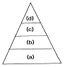
- 데이터설계 - 아키텍쳐설계 - 절차설계 - 인터페이스설계
- 아키텍쳐설계 - 데이터설계 - 절차설계 - 인터페이스설계
- 아키텍쳐설계 - 데이터설계 - 인터페이스설계 - 절차설계
- 데이터설계 - 아키텍쳐설계 - 인터페이스설계 - 절차설계
(정답률: 24%)
78. 위험 모니터링(monitoring)의 의미로 가장 적절한 것은?
- 위험을 이해하는 것
- 위험요소들에 대하여 계획적으로 관리하는 것
- 위험 요소 징후들에 대하여 계속적으로 인지하는 것
- 첫 번째 조치로 위험을 피할 수 있도록 하는 것
(정답률: 64%)
79. UML에서 use case diagram에 속하는 내용이 아닌 것은?
- Actor
- Use case
- Relationship
- Object
(정답률: 25%)
80. 자료흐름도의 구성 요소와 표시 기호의 연결이 옳지 않은 것은?
- 종착지(terminator) : 오각형
- 자료흐름(data flow) : 화살표
- 처리공정(process) : 원
- 자료저장소(data store) : 직선(평행선)
(정답률: 65%)
5과목: 데이터 통신
81. LAN의 매체 접근 방법에 따른 분류로 옳지 않은 것은?
- CSMA/CD
- 토큰 버스
- 토큰 링
- LLC
(정답률: 65%)
82. 흐름 제어방식에서 한 번에 여러 개의 프레임을 전송할 경우 효율적인 기법은?
- 정지 및 대기
- 슬라이딩 윈도우
- 다중 전송
- 적응성 ARQ
(정답률: 54%)
83. 지능 다중화기에 대한 설명으로 옳지 않은 것은?
- 비동기식 다중화 장비이다.
- 통계적 다중화기라고 한다.
- 가격이 저렴하고 접속에 소요되는 시간이 단축된다.
- 주소 회로, 흐름 제어, 오류 제어 등의 기능이 있다.
(정답률: 60%)
84. 정보의 전송제어 절차의 단계를 올바르게 나타낸 것은?
- 회선접속→ 데이터링크의 확립→ 데이터 전송 → 데이터링크의 해제 통보→ 회선절단
- 회선접속→ 데이터 전송→ 데이터링크의 확립 → 데이터링크의 해제 통보→ 회선절단
- 회선접속→ 데이터링크의 확립→ 데이터링크의 해제 통보 → 데이터 전송→ 회선절단
- 회선접속→ 데이터링크의 확립→ 데이터 전송 → 회선절단→ 데이터링크의 해제 통보
(정답률: 77%)
85. 누화(Crosstalk) 및 상호변조잡음(Intermodulation noise)과 관계있는 멀티플렉싱은?
- TDM
- FDM
- DM
- STDM
(정답률: 53%)
86. 정보를 0과 1로 표시하고, 이것을 직류의 전기 신호로 전송하는 것은?
- 대역 전송 방식
- 직렬 전송 방식
- 병렬 전송 방식
- 베이스 밴드 전송 방식
(정답률: 36%)
87. 전송 오류 제어 방식에서 오류 제어용 코드 부가 방식이 아닌 것은?
- 패리티 검사
- 해밍 코드 사용방식
- 순환 중복 검사방식
- 궤환 전송방식과 연속 전송방식
(정답률: 62%)
88. LAN의 CSMA/CD 방식에서 운용상의 특징으로 옳은 것은?
- LAN에 연결되어 있는 어느 한 DTE가 고장이 나더라도 다른 DTE의 통신에는 전혀 영향을 미치지 않는다.
- 충돌이 발생하더라도 다른 기기의 데이터 전송은 가능하다.
- 통신량이 많아지더라도 채널의 이용률은 떨어지지 않는다.
- 지연 시간을 충분히 예측할 수 있다.
(정답률: 35%)
89. 수신 스테이션은 비트 에러나 프레임의 손실을 검사하게 되고, 에러가 검출되면 자동적으로 송신 스테이션에게 재전송을 요청하는 자동 재전송 요청(Automatic Repeat reQuest)을 하게 되는데, 다음 중 ARQ 방식이 아닌 것은?
- Go-back-N ARQ
- 정지-대기(Stop-and-Wait) ARQ
- 선택적 재전송(Selective-Repeat) ARQ
- 슬라이딩 윈도우(Sliding-Window) ARQ
(정답률: 60%)
90. 회선교환 방식에서 제어 신호의 종류가 아닌 것은?
- 감시 제어신호
- 신호 제어신호
- 주소 제어신호
- 통신망 관리 제어신호
(정답률: 26%)
91. 25개의 구간을 망형으로 연결하면 필요한 회선의 수는 몇 회선인가?
- 250
- 300
- 350
- 500
(정답률: 43%)
92. 데이터 전송 속도의 척도를 나타내는 것이 아닌 것은?
- 변조 속도
- 데이터 신호 속도
- 반송파 주파수 속도
- 베어러(Bearer) 속도
(정답률: 32%)
93. 서로 다른 주파수들이 똑같은 전송 매체를 공유할 때 이 주파수들이 서로의 합과 차의 신호를 발생함으로써 발생되는 잡음을 무엇이라 하는가?
- 상호변조 잡음
- 열 잡음
- 누화 잡음
- 충격 잡음
(정답률: 58%)
94. 다음에서 세션 계층의 설명으로 옳지 않은 것은?
- 암호화와 형식 변환의 기능을 제공한다.
- 통신 시스템 간의 회화 기능을 제공한다.
- 전송하는 정보의 일정한 부분에 체크 점(check point)을 둔다.
- 소동기점과 대동기점을 이용하여 회화 동기를 조절한다.
(정답률: 40%)
95. 적절한 전송 경로를 선택하고 이 경로로 데이터를 전달하는 인터네트워킹(internetworking) 장비는?
- 리피터(repeater)
- 브리지(bridge)
- 라우터(router)
- 게이트웨이(gateway)
(정답률: 60%)
96. 다음의 라우팅 프로토콜 중에서 여러 자율 시스템 간에 라우팅 정보를 교환하는 라우팅 프로토콜은?
- BGP (Border Gateway Protocol)
- RIP (Routing Information Protocol)
- OSPF (Open Shortest Path First)
- IGP (Interior Gateway Protocol)
(정답률: 31%)
97. VAN이 제공하는 4가지 기능의 큰 분류에 속하지 않는 것은?
- 전송 기능
- 실시간 기능
- 교환 기능
- 정보처리 기능
(정답률: 31%)
98. 여러 단말기가 같은 장소에 위치하는 경우, 다중화 기능을 이용하여 전송로의 수를 감소시키기 위해 사용하는 장비는?
- 모뎀
- 허브
- 멀티플렉서
- 라우터
(정답률: 50%)
99. 인터넷 프로토콜 아키텍처를 구성하는 4 계층이 아닌 것은?
- 표현 계층
- 전송 계층
- 인터넷 계층
- 링크 계층
(정답률: 37%)
100. 종점 간에 오류 수정과 흐름 제어를 수행하여 신뢰성 있고 투명한 데이터 전송을 제공하는 것은 OSI 7계층 중 어느 계층인가?
- 물리 계층
- 데이터 링크 계층
- 네트워크 계층
- 트랜스포트 계층
(정답률: 37%)